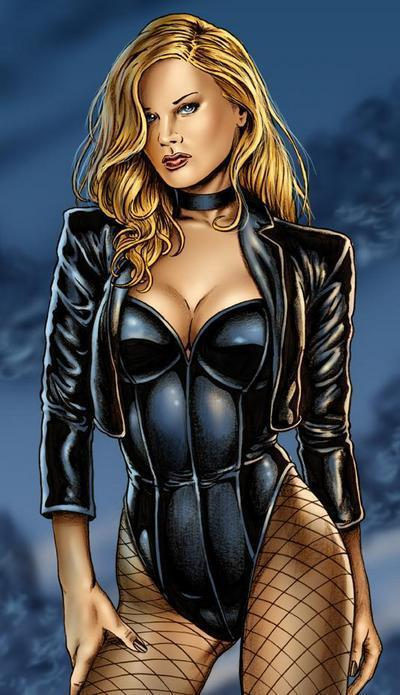
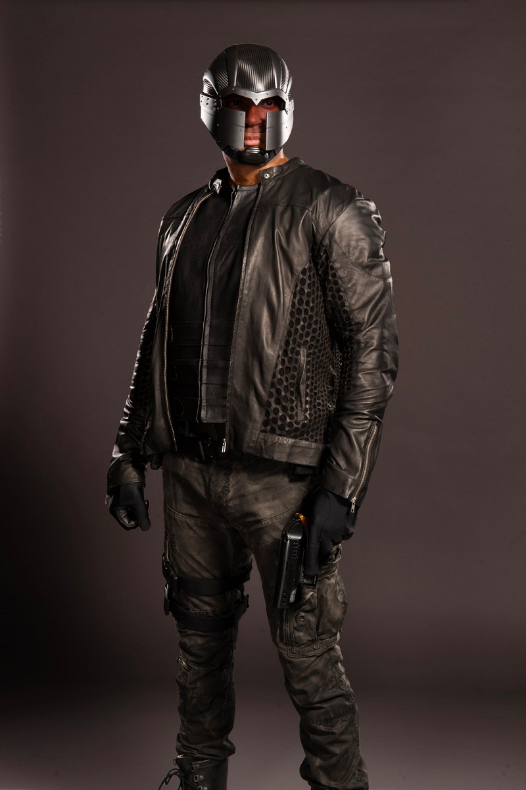
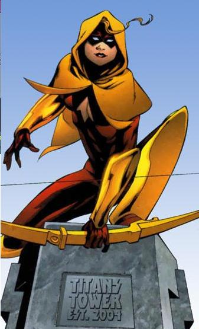

Spoiled billionaire Oliver Queen came home with an entirely different personality—and a newfound purpose in life.
Completely self-absorbed and never caring about anything but himself, Queen was on a leisurely sailing trip when
his assistant betrayed him, leaving him for dead on a desolate remote island. Stranded, he survived by, amongst
other things, mastering a bow and arrow. When he eventually discovered the primitive locals that shared the island
with him, he uncovered a large conglomerate sadistically exploiting and enslaving them. Ollie used his new skills of
survival and archery to lead a rebellion— only to realize how similar his opponents were to the man he used to be.
His comand
  